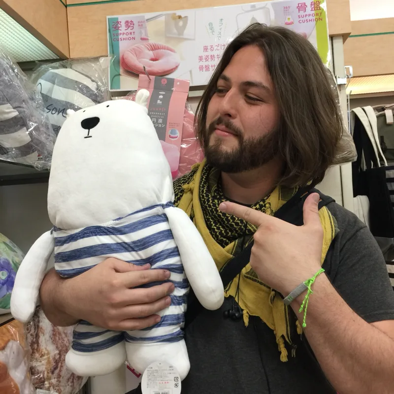
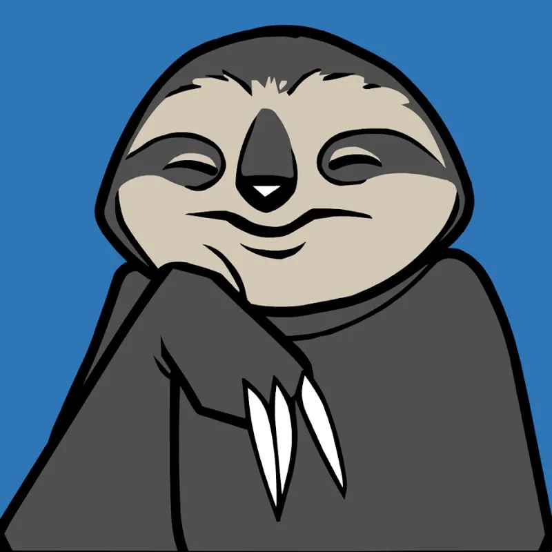
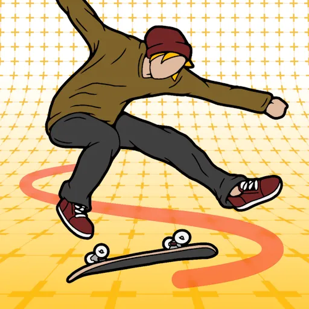
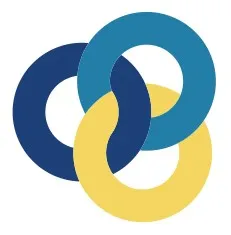
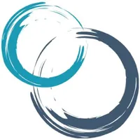
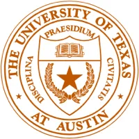

jonathan barceló
• Email: contact@jona.bar
• Website: https://jona.bar
• Phone: +1 469 274 1619
• Location: Dallas, TX
Hi, I'm Jona, a producer person with over 13 years of experience helping co-located and remote teams collaborate across creative and technical crafts in the games industry.
Relevant Work Experience
From localization to game production, and plenty of tangents along the way — here are some of the steps that brought me to where I am today.

Senior Producer
Innersloth November 2023 – CurrentI serve as the Producer for Among Us, where I lead and coordinate a cross-functional team of programmers, backend engineers, artists, game designers, QA testers, and localization professionals in the full development lifecycle, from concept to release (and all subsequent live ops). While in this position, I have been responsible for guiding the team through numerous gameplay and content updates, an overhauled matchmaker, improved player reporting flows, and countless process and workflow improvements that have helped Among Us sustain its massive player base, even as the game approaches its 10 year anniversary.

Senior Product Manager
Agora June 2022 – November 2023Agora is a real-time engagement platform as a service provider, where I lead the company's efforts to solve the challenge of enabling presence from any device into any virtual world or gaming application by: conducting market research and competitive analysis; managing the product development lifecycle, including gathering requirements from customers and Agora's solutions architect team; leading the development of reference applications designed to showcase Agora's capabilities with game engines and web applications.

Producer
Reality Crisis November 2018 – February 2022Reality Crisis is a remote game development studio focused on bringing real-world interactions to the action sports genre, where I headed production to bring the world's first Augmented Reality skateboarding game to market, from 0 -> 1. While in this position, I led R&D efforts to test viability of 7 different emergent Augmented Reality technologies for mobile game development by: conducting customer research interviews and usability tests to inform design iterations on early game prototypes; collaborating with company leadership and internal stakeholders to define, prioritize and execute on the roadmap for Skatrix; defining the tech stack for Skatrix as a live service game, and managing the resulting backlog; implementing Agile project management methodologies to serve a team of artists, engineers, designers, and QA testers distributed across 6 different timezones in Europe, Oceania, and the Americas. Skatrix was later published by Niantic.

Producer (LATAM)
Riot Games June 2015 – April 2018In addition to maintaining continuity of my responsibilities in the localization team, I developed and produced landmark original content for the LATAM region: audio stories, documentaries, Esports news and analysis, behind the scenes featurettes, animations, and live audiovisual experiences.

Localization Coordinator
Riot Games June 2014 – May 2015As a founding member of the LATAM team, I was responsible for implementing localization best practices for web pages, graphics, comics, promos, and in-game text strings, as well as managing LATAM LQA, and VO localization pipelines.
Spanish Language Specialist
NCSOFT February 2013 – June 2014I led external player support teams in crafting and localizing player communications for Guild Wars, Guild Wars 2, Lineage II, and during the release of Wildstar.
Certificates & Education



